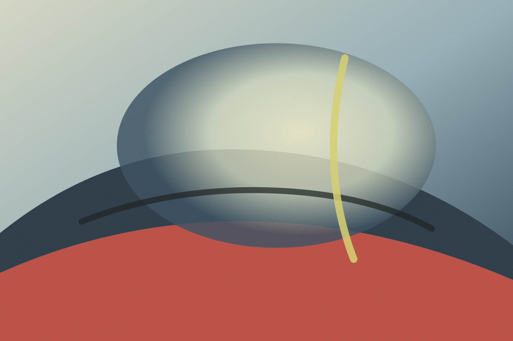
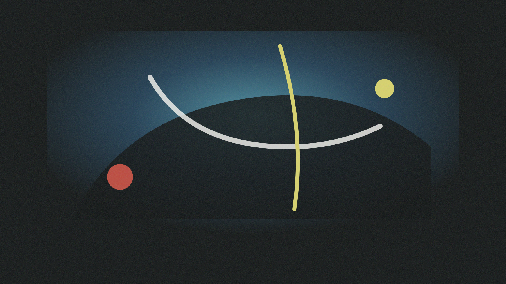
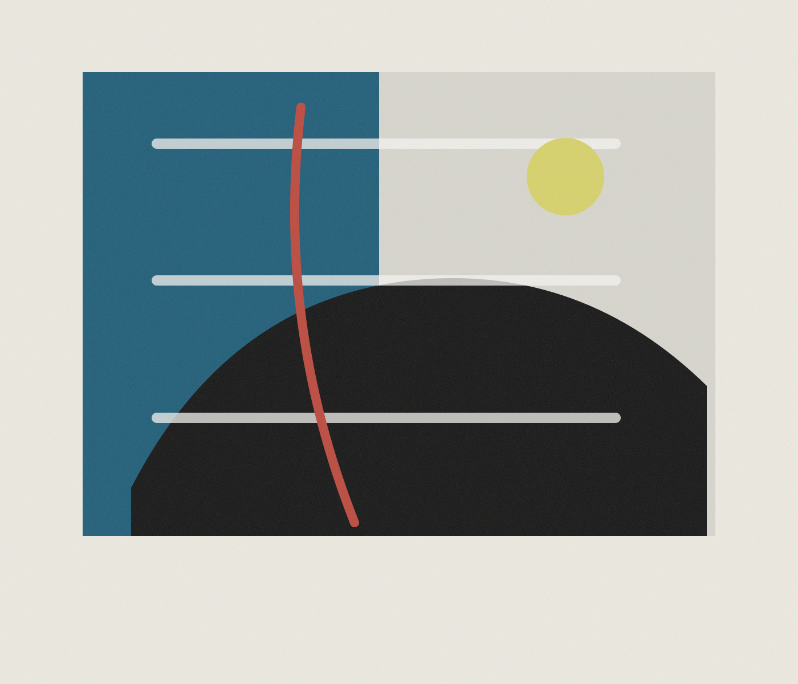

This page is a quiet project record. Replace this paragraph with your own work description: what the image is, how the video was made, and what kind of experience you want the viewer to enter.
The first page functions like a threshold. It removes navigation and text so the viewer meets only image, motion, and the surface disturbance of the cursor.


